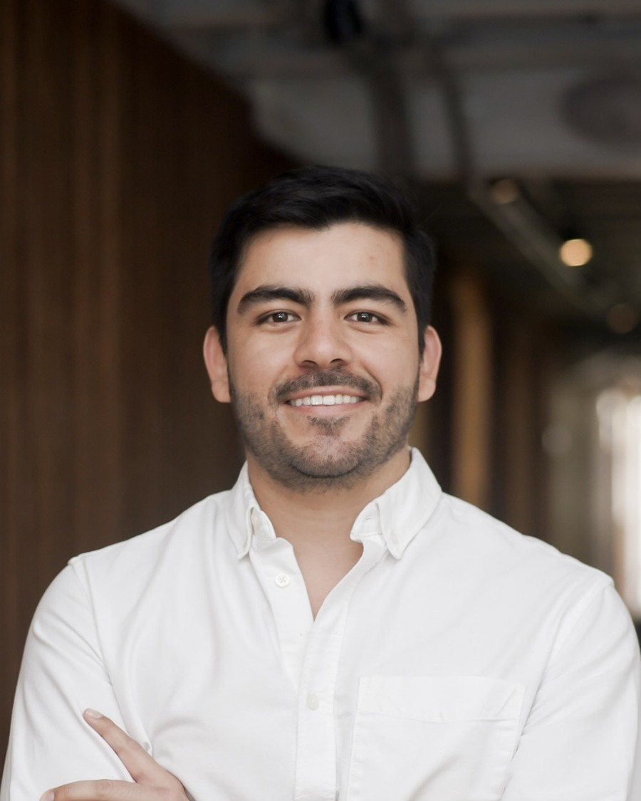

Field Brief — Curriculum Vitae
Valentín Rodríguez
Co-Founder, Supertest — building AI agents & GTM systems with Claude Code.

Open to: GTM Leadership roles · People & Talent Leadership roles — at tech startups.
Profile
Co-founder and operator who turns business problems into working software — using Claude Code as my engineering team. At Supertest, I diagnose the bottleneck in the sales or ops process and build the agent, skill, or workflow that removes it. That instinct comes from 7+ years leading People & Talent across LATAM and the U.S. — including co-founding a staff augmentation agency that recruited and managed 100+ software professionals for VC-backed companies — now applied to building AI-native GTM infrastructure myself, end to end.
Companies Founded
Supertest ↗ supertest.co
Jan 2026 — PresentPartner
AI-personalized EdTech platform preparing Colombian students for the Saber 11 and Saber Pro standardized tests, sold B2B to schools and universities. Barranquilla, Colombia.
- Designed and built, personally, with Claude Code, a 9-project GTM automation portfolio that runs the company's sales motion: an internal Slack sales orchestrator, an AI WhatsApp SDR/support agent, a cold-outreach engine, a pre-meeting research agent, a call-reviewer that writes CRM notes and tasks, a proposal generator, and a newsletter agent.
- Acts as the company's own GTM engineer — integrating the Anthropic API, Attio CRM, Slack, GitHub, Fireflies, Linear, and Make.com into one operating system for a founder-led sales motion, running 24/7 on a self-managed VPS.
- Owns product vision, B2B sales (rectors, vicerrectores, deans), and go-to-market strategy for the Costa Caribe region.
Avvy Talent ↗ avvy.co
Jan 2022 — Jun 2026Co-Founder | Head of People & Talent Acquisition
LATAM-focused staff augmentation and recruiting agency serving U.S. and European tech companies.
- Led the company to a successful exit, acquired by another recruiting agency in June 2026 after 4+ years scaling the business.
- Recruited and managed 100+ software engineers, data professionals, and technical roles across LATAM; led end-to-end talent acquisition, people operations, and organizational design for fully remote teams.
- Introduced automation and AI-driven workflows to streamline recruiting, candidate screening, and internal processes.
MondayLoop
Jan 2025 — Aug 2025Co-Founder, GTM
Consumer app devshop shipping mobile apps for the U.S. App Store market.
- Shipped and grew a 4-app consumer portfolio — MacroMax (AI calorie tracker), DogDogScan (AI dog breed ID + skin scanner), an image-to-anime line, and an AI image generator — to 1,000+ downloads and ~$3K MRR combined.
- Growth ran below the threshold that justified the capital and attention required to keep scaling it — redirected both into Supertest in 2026 as the higher-leverage bet.
Rutana
Mar 2019 — Mar 2020Co-Founder
University car-sharing mobile application. Barranquilla, Colombia.
- Led early operations and business development; built partnerships across 4 universities.
- Reached 500+ shared rides among 2,000+ registered users.
Projects Built with Claude Code
A 9-project GTM automation portfolio built solo for Supertest, not from a software background. Two flagship systems below; the rest of the portfolio follows.
Sales Orchestrator (Slack Agent)
The command center: lives in #ventas, reads the live pipeline from the CRM, executes commercial tasks on command, and runs the other 8 agents by mention — zero terminal.
Claude Code · Anthropic API · Python · Slack Bolt (Socket Mode) · Attio API · GitHub API · DigitalOcean VPS + pm2
WhatsApp SDR & Support Agent ("Claudia")
Qualifies inbound prospects and answers customer support over WhatsApp, with human-like typing delay, persistent conversation history, and Slack alerts routed by urgency.
Claude Code · Anthropic API · EvolutionAPI / Baileys · Docker · Python · VPS Deployment
Cold Outreach Sequencer
Turns a CSV of target institutions into a researched, personalized multi-touch email + WhatsApp sequence, with auto stop-on-reply and CRM sync.
Claude Code · Anthropic API · Exa.ai · Gmail SMTP/IMAP · Attio API · Python
Pre-Meeting Research Agent
Given an institution's name, generates a PDF brief with results, comparatives, and decision-makers — delivered to Slack in ~2 minutes, before every call.
Claude Code · Anthropic API · Exa.ai · Python
Call Reviewer
Pulls the latest sales call transcript, opens follow-up tasks in Linear, and writes a CRM note with a suggested deal stage — confirmed by a human, never auto-moved.
Claude Code · Anthropic API (Sonnet) · Fireflies.ai GraphQL · Linear API · Attio API
Internal Wiki with Natural-Language Editing
A 22-page company wiki the Slack agent can update and redeploy on command. View live →
Claude Code · MkDocs Material · GitHub API · Vercel · Anthropic API
This Website
This CV site itself — built end to end with Claude Code. View repo →
Claude Code · HTML / CSS · Python (image processing)
Work Experience
Customer Experience Lead
Nov 2021 — Mar 2022Farmu · Barranquilla, Colombia — VC-backed online drugstore marketplace
- Built and scaled the Customer Experience function from scratch, including team hiring and training.
- Implemented CRM systems, support tools, and performance KPIs.
- Established feedback loops between Customer Support, Operations, Sales, and Product teams.
Settlements Coordinator
Jun 2020 — Oct 2021Lean Solutions Group · Barranquilla, Colombia
- Led contractor settlement operations across two U.S. logistics terminals.
- Implemented rate validation and control processes to prevent payment discrepancies and delays.
- Supported management with actionable insights to improve accuracy and efficiency across 200+ monthly contractor payments.
Commercial Credit Analyst
Mar 2018 — Mar 2019Banco Serfinanza · Barranquilla, Colombia
- Analyzed corporate clients' financial statements, credit history, and KPIs.
- Supported credit approval decisions through risk assessment and financial modeling.
Credentials
Universidad del Norte — BA, Business Administration · Barranquilla, Colombia (2012–2017)
Valencia College — HR Management Certificate · Orlando, FL (2014)
Endeavor Accelerator — Dream Bigger Program (2024)
Capabilities
Community
Caribedev.org
Community sponsor · 2023–Present
Supabase Community Meetups
Host · Bogotá / Barranquilla / Cartagena · 2023–Present
RevenueCat Shipathon
Barranquilla · 2025